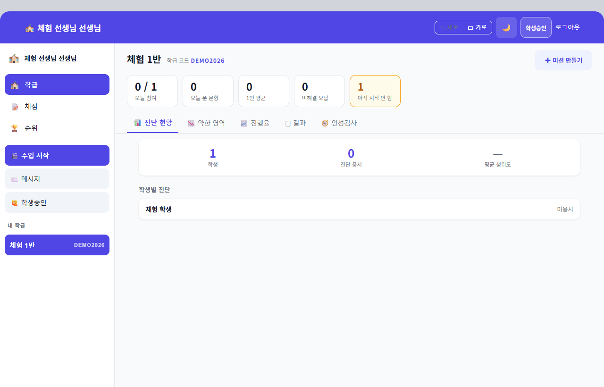
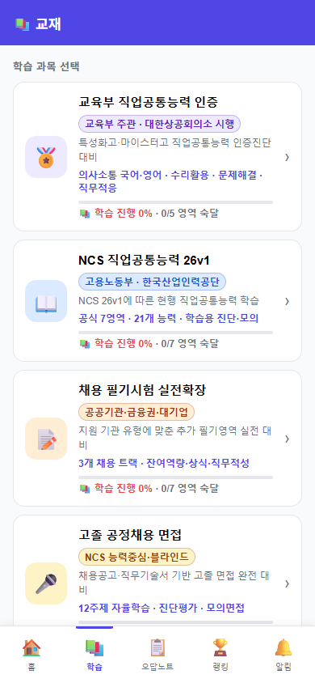

인증평가 준비가 막막할 때
746문항교육부 직업공통능력관
교재·수업·진단을 한 흐름으로
설탕과소금 스킬캠퍼스
직업공통능력·NCS·채용필기·자기소개서·면접·인성평가를 학생의 학습과 선생님의 수업으로 이어주는 앱입니다.


설명용 콘텐츠가 아니라 수업과 자율학습, 진단과 실전 평가가 이어지도록 학습 문항과 평가 문항을 분리해 구성했습니다.
교재·수업·진단을 한 흐름으로
7영역 21개 하위능력 반복훈련
공공기관·금융권·대기업 실전 확장
학생 근거·기업 정보·교사 첨삭 연결
1분 소개부터 지원동기·마지막 말까지
문항 경험과 응답 경향을 스스로 점검
학생은 다음에 할 일을 알고, 선생님은 여러 학급의 학습·약점·작성물을 같은 화면에서 이어 봅니다.
직업기초를 익히고 학과·자격·교과외활동을 나의 취업 근거로 쌓습니다.
수업에서 배운 내용을 단원별 학습, 오답 복습, 진단평가로 단단하게 만듭니다.
지원처에 맞춰 실전 문항을 풀고 작성한 답변을 교사 첨삭과 코칭으로 완성합니다.
아래 화면은 현재 설탕과소금 앱의 학생·교사 사용 흐름입니다.
“그때 겪은 어려움을 다른 선생님들은 겪지 않으시도록, 취업 지도 실무에서 실제로 쓰이는 것만 골라 담았습니다.”
유한회사 설탕과소금 대표 김영희
학생 학습과 선생님의 수업·지도를 새 앱에서 바로 확인할 수 있습니다.